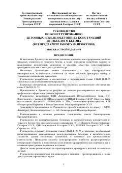

РПOg'ir betondan temir-beton konstruksiyalarni loyihalash va armaturalash bo'yicha texnik qo'llanma.
Ushbu qo'llanma og'ir betondan tayyorlangan temir-beton konstruksiyalarni loyihalash va armaturalash bo'yicha asosiy tamoyillarni o'z ichiga oladi. Kitobda sanoat binolari va inshootlari uchun mo'ljallangan yig'ma hamda monolit elementlarni konstruksiyalash usullari batafsil yoritilgan.